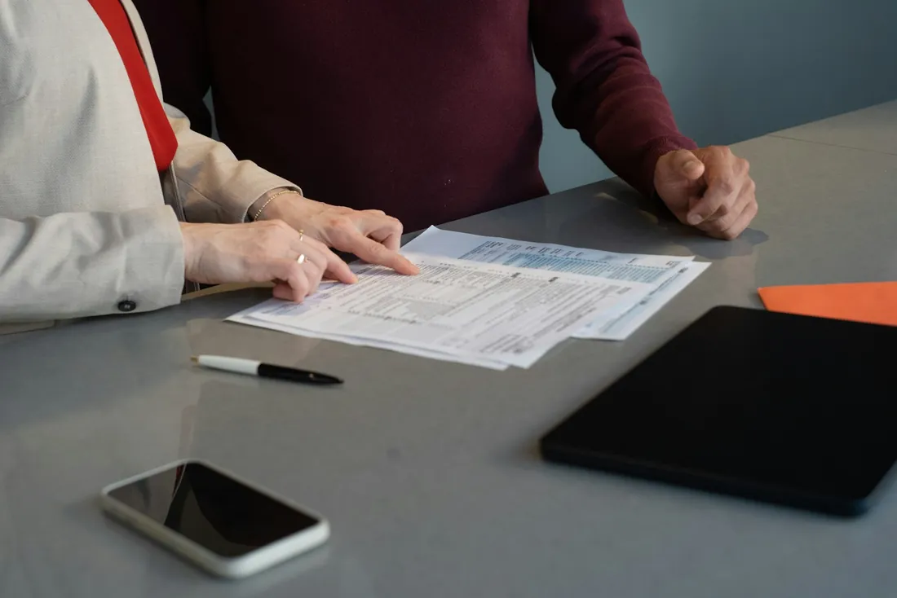
Sinds 2013
Collectieve schuldenregeling
Uitleg, advies en het verzoekschrift. Komt u in aanmerking voor juridische tweedelijnsbijstand, dan kan dat zelfs kosteloos.
Vraag uitleg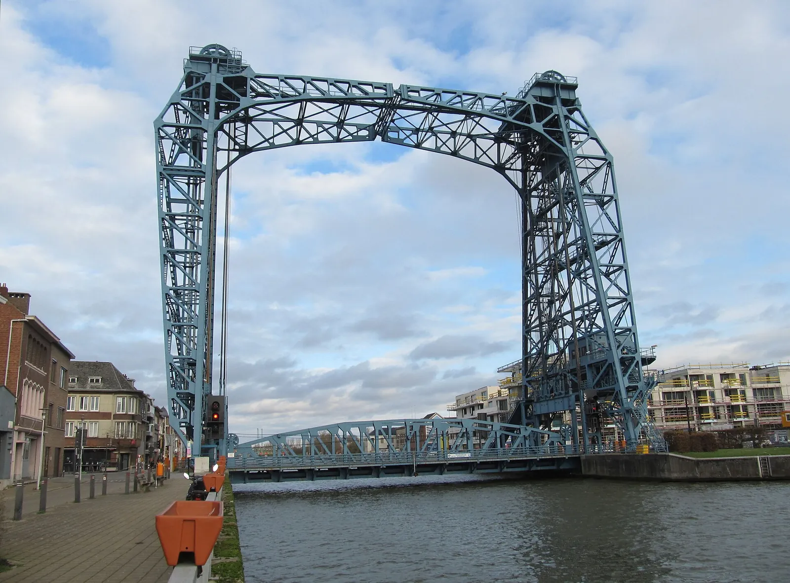
Mter. Sylvie Goossens helpt particulieren, ondernemers en besturen uit Willebroek, Londerzeel, Opwijk en omstreken. U hoort eerlijk hoe uw zaak ervoor staat, en welke weg u het minst kost.
4,4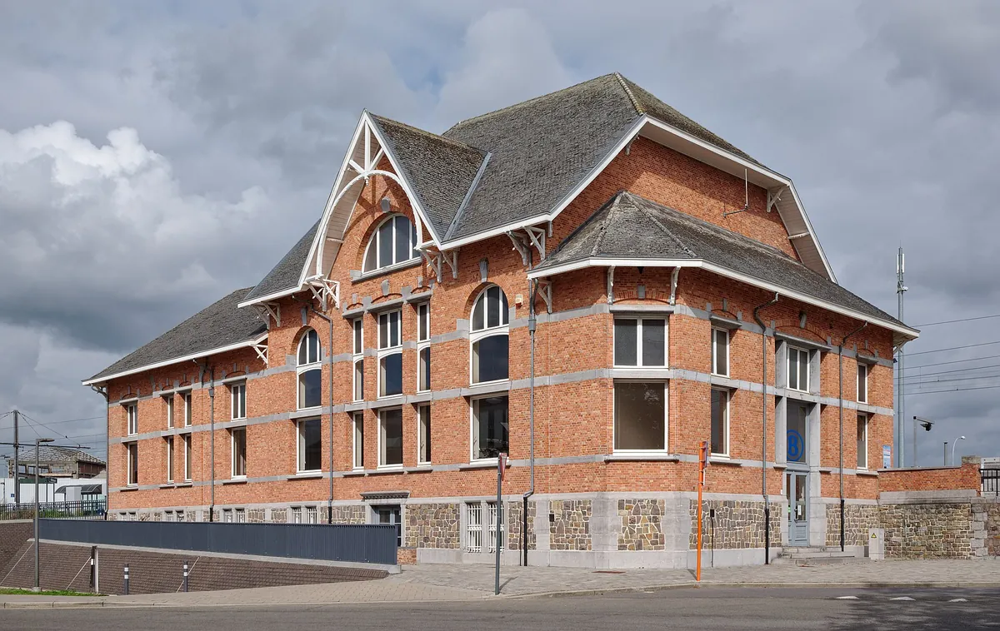
Een allround kantoor, voor wie een advies nodig heeft of al midden in een geschil zit. Tik op een domein, dan staat uw vraag al klaar in het formulier.
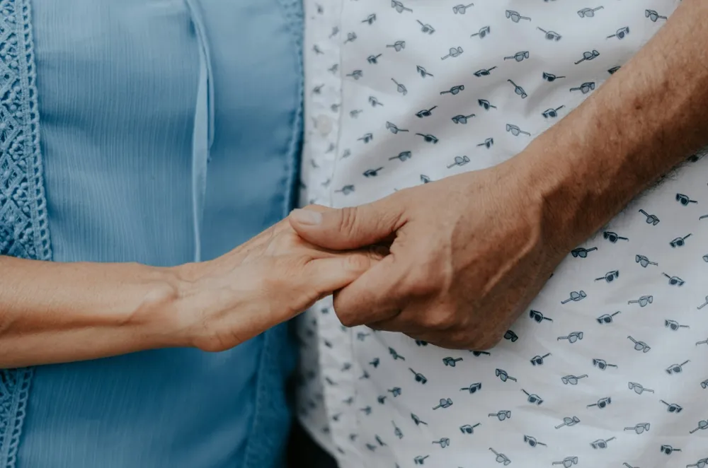
01Echtscheiding, verdeling, onderhoudsgeld, erfrecht en omgangsrecht. Ook voor grootouders die hun kleinkinderen niet meer zien.
Stel uw vraag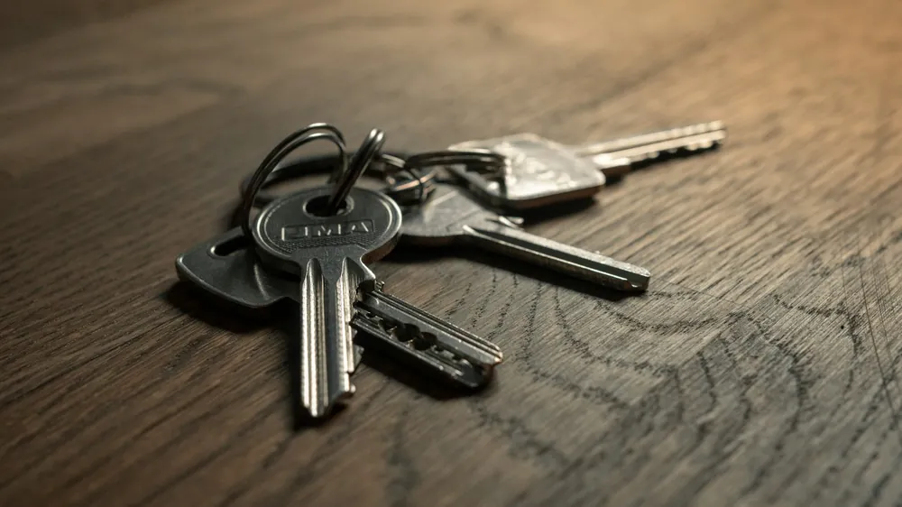
02Voor verhuurders en voor huurders. Een huurachterstal, een waarborg of een handelshuurcontract dat wringt.
Stel uw vraag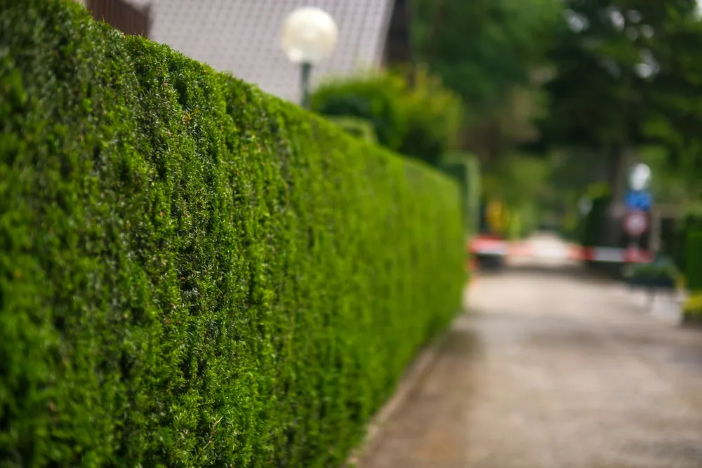
03Recht van uitweg, afpaling, burenhinder of mede-eigendom. Vaak raakt het met een goede brief al opgelost.
Stel uw vraag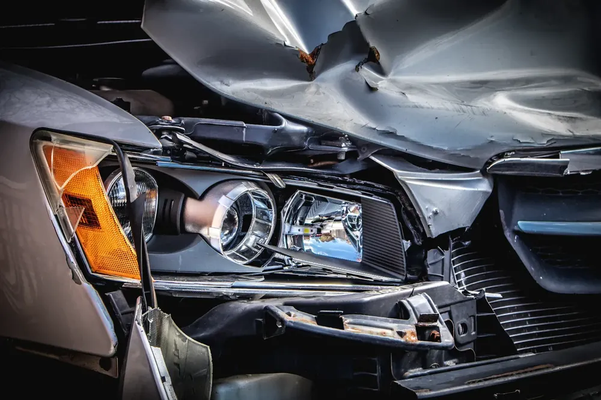
04Zelf in fout of net slachtoffer? Vaak betaalt uw verzekering rechtsbijstand de advocaat. Dat kijken we samen na.
Stel uw vraag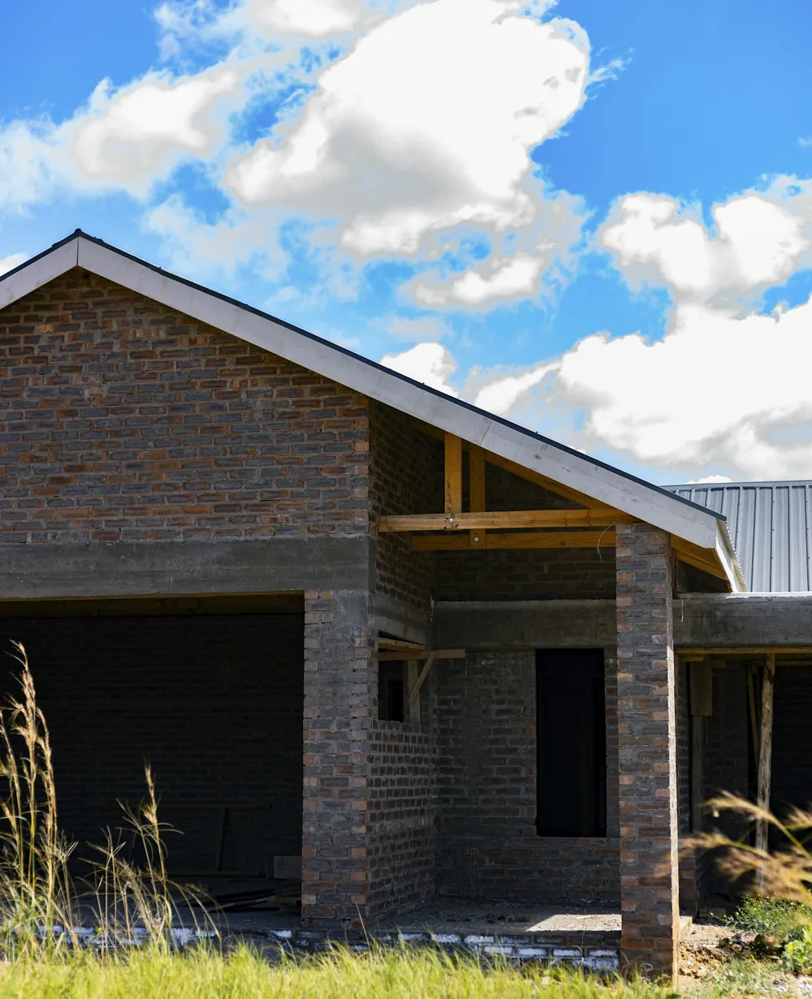
05Werken die niet volgens de regels van de kunst zijn uitgevoerd, schade of een discussie over wie aansprakelijk is. Voor aannemers en voor bouwheren.
Stel uw vraag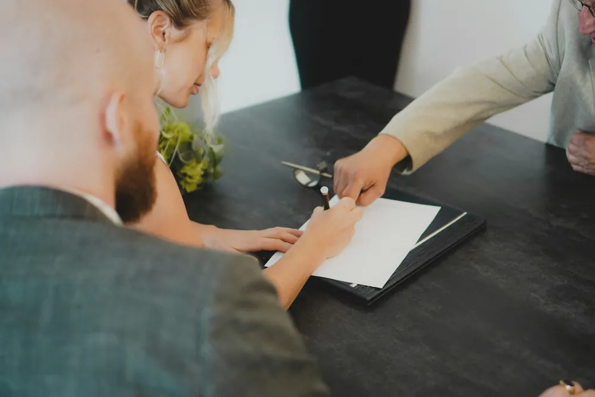
06Eerst een minnelijke regeling, pas daarna de rechtbank. Met goede algemene voorwaarden verhaalt u de kosten zoveel mogelijk op de schuldenaar.
Stel uw vraag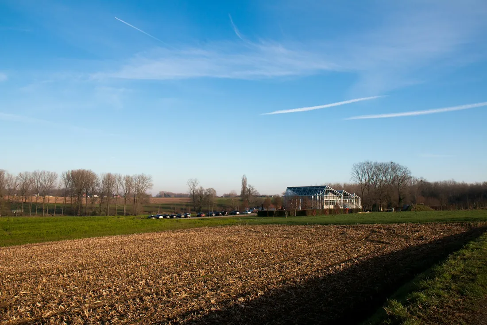
Tussen Willebroek, Londerzeel en Opwijk ligt nog veel landbouwgrond. Voor landbouwers en eigenaars helpt het kantoor bij vragen over pacht en de overdracht van een bedrijf.
Mter. Goossens volgde de opleidingen tot schuldbemiddelaar en curator-vereffenaar. De rechtbank stelt haar aan in dossiers waar mensen of bedrijven het moeilijk hebben.

Uitleg, advies en het verzoekschrift. Komt u in aanmerking voor juridische tweedelijnsbijstand, dan kan dat zelfs kosteloos.
Vraag uitleg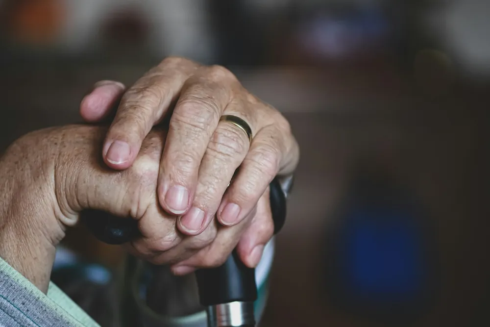
Voor wie zijn geld en goederen niet meer zelf kan beheren. Mter. Goossens wordt aangesteld als voorlopig bewindvoerder.
Vraag uitlegEen procedure van gerechtelijke reorganisatie (WCO), een faillissement of een aangifte van schuldvordering als een klant failliet gaat.
Vraag uitlegVeel mensen weten niet dat hun familiale of autoverzekering een advocaat dekt. Beantwoord drie korte vragen en zie welke mogelijkheden er voor u zijn.
Een eerste indicatie. In het gesprek wordt uw situatie precies nagekeken.
Bij het kantoor bent u geen nummer. U legt uw verhaal één keer uit, aan de advocaat die uw dossier ook verder opvolgt.
Kort wat er speelt. Van maandag tot vrijdag is het kantoor telefonisch bereikbaar.
Breng mee wat u hebt: brieven, contracten, foto's en uw verzekeringspolis. We overlopen het rustig.
Welke stappen mogelijk zijn, wat ze ongeveer kosten en of een verzekering of pro deo tussenkomt.
Het kantoor aan de Groene Laan was eerst bekend als advocatenkantoor Spiessens, later als Spiessens en Goossens. Vandaag zet Mter. Goossens het verder, met een persoonlijke aanpak en een nauwgezette opvolging van elk dossier.
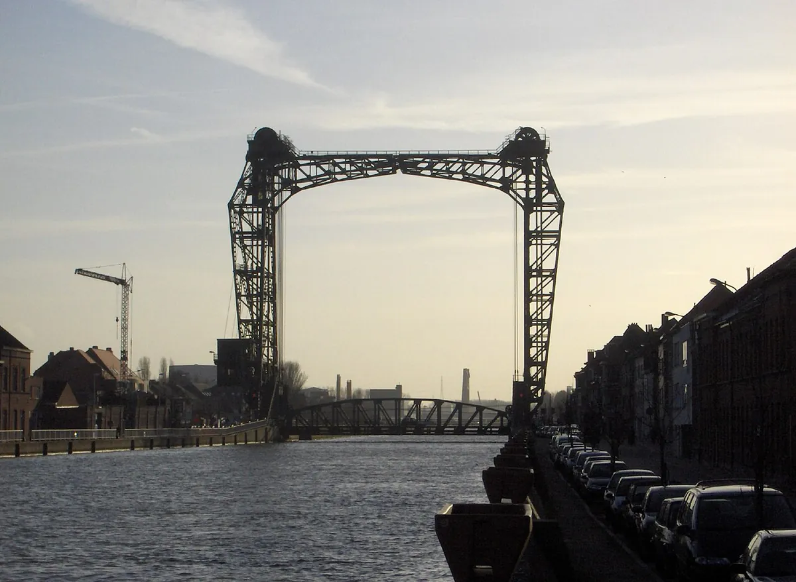
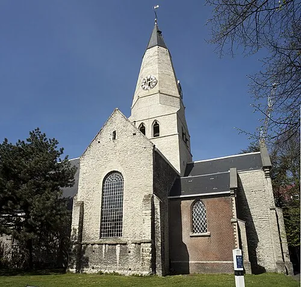
Samengevat uit de reviews op Google.
Gratis, op de openbare parking vlak voor het kantoor. Met de gps rijdt u best naar de Nieuwstraat, dan rechtdoor tot aan de vaart en links af. Op nummer 6 vindt u het kantoor.
Ja. Het station van Willebroek ligt op tien minuten wandelen, de bushalte aan de Dr. Persoonslaan op twee minuten.
Vaak wel, zeker bij verkeerszaken of als u slachtoffer bent van een misdrijf. Rechtsbijstand zit dikwijls in uw familiale of autoverzekering. Breng uw polis mee naar het eerste gesprek, dan kijkt het kantoor het samen met u na.
Per uur of als vast bedrag, afhankelijk van de aard van de zaak. Voor prestaties die makkelijk te begroten zijn, spreekt u vooraf een bedrag af. Op erelonen en kosten komt 21 procent btw.
Dat hangt af van uw inkomen en uw gezinssituatie. Komt u in aanmerking voor juridische tweedelijnsbijstand, dan neemt de Belgische Staat het ereloon en de kosten forfaitair ten laste. Het kantoor gaat het graag voor u na.
Ja, voor ondernemers, vennootschappen en openbare besturen. Voor organisaties kan een forfait of een abonnementstarief afgesproken worden.
Bij een collaboratieve onderhandeling zoeken beide partijen, elk met hun eigen advocaat, samen naar een oplossing zonder naar de rechter te stappen. Dat werkt vaak goed bij een scheiding of een conflict met iemand die u blijft tegenkomen.
Bel tijdens de kantooruren, stuur een mail of vul het formulier in. U krijgt zo snel mogelijk een antwoord.
| Maandag | 8.30 tot 18.00 |
| Dinsdag | 8.30 tot 18.00 |
| Woensdag | 8.30 tot 18.00 |
| Donderdag | 8.30 tot 18.00 |
| Vrijdag | 8.30 tot 16.00 |
| Zaterdag | gesloten |
| Zondag | gesloten |
DIEen woordje uitleg van Stijn
Ik maakte deze demo voor u om te tonen wat er kan. Na een kort gesprek maak ik er iets veel persoonlijkers van, helemaal naar uw wens.
Vrijblijvend. Ik kom langs of we bellen.
Op maat, op uw eigen domein.
Geen voorschot. U betaalt pas als alles klaar is.
Hosting, domeinnaam en kleine wijzigingen, zoals nieuwe openingsuren.
Omdat een voorbeeld meer zegt dan een mail. Zo ziet u meteen wat er kan, en het kost u niets.
Nee. Het gesprek is vrijblijvend. Vindt u het niks, dan is het daarmee gedaan.
Na ons gesprek staat uw site binnen 10 tot 14 dagen online.
Zeker. Uw domeinnaam kan gewoon blijven, de nieuwe site komt in de plaats van de oude.
Nee, dat doe ik op basis van ons gesprek. Eigen foto's zijn mooi meegenomen, maar niet nodig om te starten.